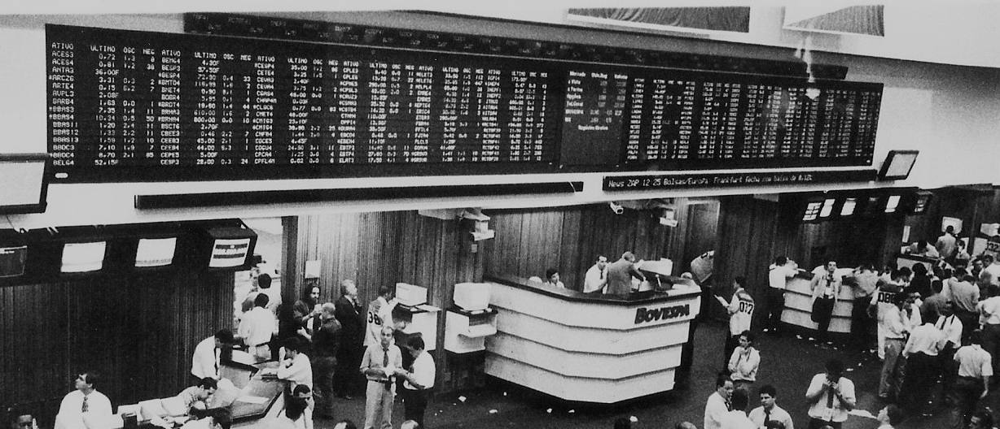

Glossário do investidor
89 termos de juros, renda fixa, bolsa, fundos e imposto de renda, explicados para quem está começando — com links para os dados e os guias do site.
Foto: O antigo pregão viva-voz da Bovespa, com o painel de cotações — Núcleo Editorial de Revistas da Faculdade Cásper Líbero, Wikimedia Commons · CC BY 2.0 · recortada, dessaturada e escurecida
.jpg){kind=link}
Definições conferidas em 3 de outubro de 2026. Quando um termo envolve regra legal (imposto, garantia, prazo mínimo), a fonte oficial aparece logo abaixo da definição.
De A a Z
- Ações ordinárias e preferenciais (ON e PN)
- B3
- BDR
- Benchmark
- Bens e direitos
- Bonificação
- CDB
- CDI
- Come-cotas
- Copom
- Corretora
- Cota
- CRI e CRA
- Cupom
- CVM
- DARF
- Data com
- Data ex
- Day trade
- Debênture
- Desdobramento (split)
- Diversificação
- Dividend yield
- Dividendos
- EBITDA
- ETF (fundo de índice)
- FGC
- FII (fundo imobiliário)
- Free float
- Fundo de investimento
- Ganho de capital
- Grupamento (inplit)
- Home broker
- Ibovespa
- IFIX
- IGP-M
- Indexador
- Inflação
- Informe de rendimentos
- IOF
- IPCA
- IPCA+ (taxa real)
- IPO
- IR retido na fonte (dedo-duro)
- Isenção de R$ 20 mil
- ISIN
- JCP (juros sobre capital próprio)
- Juros compostos
- LCI e LCA
- Liquidez
- Liquidez diária
- LPA (lucro por ação)
- Marcação a mercado
- Margem líquida
- Mercado fracionário e lote padrão
- P/L (preço sobre lucro)
- P/VP (preço sobre valor patrimonial)
- Payout
- Percentual do CDI
- Poupança
- Pregão
- Prejuízo compensável
- Previdência privada (PGBL e VGBL)
- Preço médio
- PTAX
- PU (preço unitário)
- Renda fixa
- Renda variável
- Rentabilidade real
- Reserva de emergência
- ROE (retorno sobre o patrimônio)
- Selic
- Spread
- Subscrição
- Tabela regressiva do IR
- Taxa de administração
- Taxa de custódia
- Taxa de performance
- Tesouro Direto
- Tesouro IPCA+
- Tesouro Prefixado
- Tesouro Selic
- Ticker (código de negociação)
- TR
- Vacância
- Valor de mercado
- Valor patrimonial (VPA)
- Vencimento
- Volatilidade
Juros e indicadores
Selic
Também: taxa Selic, Selic meta, Selic over, taxa básica de juros
A Selic é a taxa básica de juros da economia brasileira. Existem duas: a Selic meta, decidida pelo Copom em cada reunião, e a Selic over, a taxa média efetivamente praticada nas operações de um dia entre instituições financeiras lastreadas em títulos públicos, calculada e divulgada diariamente pelo Banco Central. A over costuma ficar ligeiramente abaixo da meta.
A Selic serve de referência para quase todos os juros do país: corrige o Tesouro Selic, influencia o CDI e define a regra de rendimento da poupança.
Copom
Também: Comitê de Política Monetária
O Copom, Comitê de Política Monetária, é o órgão do Banco Central formado pela diretoria colegiada que define a Selic meta. Ele se reúne 8 vezes por ano, em datas divulgadas com antecedência, e cada reunião termina com um comunicado; a ata sai alguns dias depois.
O objetivo da decisão é levar a inflação para a meta definida pelo Conselho Monetário Nacional (CMN). Juros mais altos tendem a frear o consumo e o crédito; juros mais baixos, a estimulá-los.
CDI
Também: taxa DI, DI, Certificado de Depósito Interbancário
O CDI é a taxa média dos empréstimos de um dia entre instituições financeiras, feitos por meio de depósitos interfinanceiros. O nome oficial do indicador é taxa DI, calculada e divulgada pela B3 a cada dia útil. Na prática ela anda colada à Selic, um pouco abaixo.
É a principal referência da renda fixa privada: quando um CDB promete “100% do CDI”, o rendimento acompanha essa taxa dia a dia (ver percentual do CDI).
Percentual do CDI
Também: % do CDI, pós-fixado atrelado ao CDI
Forma de expressar a rentabilidade de um título pós-fixado: o investimento rende uma fração da taxa CDI de cada dia. Um CDB a 110% do CDI, com o CDI a 10% ao ano, rende cerca de 11% ao ano antes do imposto.
Para comparar um título isento (como LCI e LCA) com um tributado, é preciso descontar o imposto do tributado pela tabela regressiva, que depende do prazo. Um percentual maior não diz nada sobre o risco do emissor.
IPCA
Também: inflação oficial, Índice Nacional de Preços ao Consumidor Amplo
O IPCA é o índice oficial de inflação do Brasil, calculado e divulgado mensalmente pelo IBGE. Ele mede a variação de preços de uma cesta de bens e serviços consumidos pelas famílias nas principais áreas urbanas do país.
É o índice usado na meta de inflação definida pelo Conselho Monetário Nacional e perseguida pelo Banco Central, e é o indexador do Tesouro IPCA+ e de muitos títulos privados. O número mais citado é o acumulado em 12 meses.
IPCA acumulado em 12 mesesTesouro Direto
Fonte
IGP-M
Também: Índice Geral de Preços do Mercado, inflação do aluguel
O IGP-M é um índice de inflação calculado pela Fundação Getulio Vargas (FGV). Combina preços ao produtor (o maior peso), ao consumidor e da construção civil, e por isso reage mais a câmbio e a matérias-primas do que o IPCA.
É tradicionalmente usado para reajustar contratos de aluguel e algumas tarifas. Este site não publica o IGP-M porque ele não é oferecido como dado aberto no portal do Banco Central, de onde vêm os indicadores daqui; a fonte original é a FGV.
TR
Também: Taxa Referencial
A TR, Taxa Referencial, foi criada pela Lei nº 8.177/1991 e é calculada e divulgada pelo Banco Central. Hoje serve sobretudo de componente da remuneração da poupança e da correção do FGTS e de alguns financiamentos imobiliários.
Pela metodologia atual, a TR fica em zero ou muito perto de zero quando os juros estão baixos, e passou longos períodos zerada. Por isso a parte que realmente pesa no rendimento da poupança costuma ser a parcela fixa ou a ligada à Selic.
PTAX
Também: dólar PTAX, taxa PTAX, euro PTAX
A PTAX é a taxa de câmbio de referência calculada pelo Banco Central. Pela metodologia da Circular BCB nº 3.506/2010, o BC consulta as instituições que atuam no mercado de câmbio em 4 janelas ao longo do dia, e a PTAX é a média dessas cotações, divulgada com um valor de compra e um de venda.
Ela é usada para liquidar contratos, converter valores em declarações e calcular operações referenciadas em moeda estrangeira. Não é o preço que o turista paga numa casa de câmbio, que inclui spread e tarifas.
Indexador
Também: índice de correção, referência de rentabilidade
Indexador é o índice que define como um investimento ou uma dívida é corrigido ao longo do tempo. Os mais comuns na renda fixa são o CDI, a Selic, o IPCA e, em contratos antigos ou de aluguel, o IGP-M.
Um título pós-fixado acompanha o indexador; um prefixado não tem indexador e fixa a taxa na compra; um híbrido soma uma taxa fixa a um índice de inflação, como no IPCA+.
Renda fixa
Renda fixa
Também: título de renda fixa, título de dívida
Renda fixa é o conjunto de investimentos em que a regra de remuneração é conhecida no momento da aplicação: uma taxa prefixada, um percentual de um índice ou uma combinação dos dois. Na prática, quem investe empresta dinheiro a um governo, banco ou empresa, que devolve com juros no vencimento.
“Fixa” não quer dizer sem risco nem sem oscilação: o emissor pode não pagar, e antes do vencimento o preço varia com a marcação a mercado. Exemplos: Tesouro Direto, CDB, LCI e LCA, debêntures.
Poupança
Também: caderneta de poupança, conta poupança
A poupança rende, pela Lei nº 8.177/1991, art. 12: TR + 0,5% ao mês enquanto a meta da Selic estiver acima de 8,5% ao ano; quando estiver em 8,5% ou menos, rende 70% da Selic meta mensalizada + TR. Essa regra, da Lei nº 12.703/2012, vale para depósitos feitos desde 04/05/2012.
O rendimento é creditado uma vez por mês, na data de aniversário de cada depósito; dinheiro sacado antes dela não rende naquele mês. Para pessoa física, o rendimento é isento de imposto de renda, e a poupança tem cobertura do FGC.
CDB
Também: Certificado de Depósito Bancário
O CDB, Certificado de Depósito Bancário, é um título emitido por bancos para captar dinheiro. Pode ser prefixado, atrelado ao CDI (o mais comum) ou à inflação, e pode ter liquidez diária ou só no vencimento.
O rendimento paga imposto de renda pela tabela regressiva, retido na fonte, e IOF em resgates com menos de 30 dias. O CDB tem cobertura do FGC até o limite por CPF e por instituição.
LCI e LCA
Também: Letra de Crédito Imobiliário, Letra de Crédito do Agronegócio
LCI (Letra de Crédito Imobiliário) e LCA (Letra de Crédito do Agronegócio) são títulos emitidos por bancos, com recursos destinados a financiar os setores imobiliário e do agronegócio. Para pessoa física, o rendimento é isento de imposto de renda (Lei nº 11.033/2004, art. 3º), e ambas têm cobertura do FGC.
Pela Resolução CMN nº 5.215/2025, o prazo mínimo das LCI e LCA não atualizadas por índice de preços é de 6 meses: antes disso não há resgate. A Medida Provisória nº 1.303/2025, que propunha tributá-las, perdeu a vigência em 08/10/2025, e a isenção segue valendo.
Debênture
Também: debêntures, debênture incentivada, título de dívida corporativa
Debênture é um título de dívida emitido por uma empresa (sociedade por ações) para captar recursos. Quem compra empresta à companhia e recebe juros, prefixados ou atrelados ao CDI ou ao IPCA, em cupons ou no vencimento.
Debêntures não têm cobertura do FGC: o risco é o da empresa emissora. Em regra o rendimento segue a tabela regressiva; as incentivadas, que financiam projetos de infraestrutura enquadrados na Lei nº 12.431/2011, são isentas de IR para pessoa física.
CRI e CRA
Também: Certificado de Recebíveis Imobiliários, Certificado de Recebíveis do Agronegócio, securitização
CRI e CRA são títulos emitidos por companhias securitizadoras, lastreados em recebíveis: créditos imobiliários no CRI (aluguéis, financiamentos) e do agronegócio no CRA. Quem investe recebe o fluxo desses créditos, com a remuneração definida na emissão.
Para pessoa física, o rendimento é isento de imposto de renda (Lei nº 11.033/2004, art. 3º). Não há cobertura do FGC: o risco depende da qualidade dos devedores e das garantias da operação, descritas nos documentos da oferta.
FGC
Também: Fundo Garantidor de Créditos, garantia do FGC
O FGC, Fundo Garantidor de Créditos, é uma entidade privada mantida pelas instituições financeiras que devolve ao investidor o dinheiro aplicado em certos produtos se a instituição quebrar. A garantia é de até R$ 250 mil por CPF por instituição ou conglomerado, com teto global de R$ 1 milhão a cada 4 anos.
Estão cobertos, entre outros, CDB, LCI, LCA e poupança. Não estão: títulos do Tesouro Direto (dívida do governo federal, com outro tipo de risco), CRI, CRA, debêntures, ações e fundos.
Liquidez diária
Também: resgate a qualquer momento, D+0
Um investimento tem liquidez diária quando pode ser resgatado em qualquer dia útil, total ou parcialmente, sem esperar o vencimento. Muitos CDBs, a poupança e o Tesouro Selic oferecem isso.
Liquidez diária não garante ausência de custo: em resgates com menos de 30 dias pode haver IOF, o imposto segue a tabela regressiva, e títulos com marcação a mercado podem ser vendidos por valor menor que o da compra. É uma característica central na reserva de emergência.
Vencimento
Também: data de vencimento, prazo do título
Vencimento é a data em que um título de renda fixa termina e o emissor devolve o valor combinado, com os juros. Quem fica com o título até essa data recebe exatamente a rentabilidade contratada, descontados impostos e taxas.
Vender antes do vencimento é possível em muitos títulos, mas o valor recebido é o preço de mercado daquele dia (ver marcação a mercado), que pode ser maior ou menor que o previsto. Títulos sem liquidez diária podem não ter saída antes do prazo.
Cupom
Também: juros semestrais, pagamento de juros periódicos
Cupom é o pagamento periódico de juros de um título de renda fixa antes do vencimento. Nos títulos do Tesouro “com juros semestrais”, por exemplo, os juros caem na conta a cada seis meses, e o valor principal é devolvido no fim.
O cupom antecipa fluxo de caixa, mas cada pagamento é tributado na data em que acontece, pela tabela regressiva contada desde a compra. Títulos sem cupom pagam tudo de uma vez no vencimento. Debêntures, CRI e CRA também costumam ter cupom.
PU (preço unitário)
Também: preço unitário, preço do título
PU, ou preço unitário, é o preço de uma unidade de um título de renda fixa num dado dia. No Tesouro Direto, cada título tem um PU de compra e um de venda divulgados diariamente.
O PU é o valor presente do que o título vai pagar, descontado pela taxa do dia. Por isso, quando a taxa sobe, o PU cai, e quando a taxa cai, o PU sobe. É essa relação que produz a marcação a mercado.
Marcação a mercado
Também: MaM, preço de mercado do título
Marcação a mercado é a atualização diária do preço de um título de renda fixa conforme as taxas negociadas no mercado naquele dia. Se as taxas sobem depois da compra, o PU cai; se as taxas caem, o PU sobe.
Quem mantém o título até o vencimento recebe a taxa contratada, e a oscilação no caminho não muda o resultado final. Quem vende antes recebe o preço marcado a mercado, que pode ser maior ou menor que o esperado. Títulos prefixados e atrelados à inflação de prazo longo são os mais sensíveis.
Spread
Também: diferença entre compra e venda, spread de crédito
Spread é uma diferença entre duas taxas ou dois preços. No mercado, o sentido mais comum é a diferença entre o preço de compra e o de venda de um ativo ou de uma moeda: quanto maior o spread, mais caro é entrar e sair.
Em renda fixa, fala-se também em spread de crédito: a taxa adicional que um emissor privado paga acima de um título público de prazo parecido, para compensar o risco de não pagamento. Nos bancos, spread é a diferença entre o juro cobrado no empréstimo e o pago na captação.
Tesouro Direto
Tesouro Direto
Também: títulos públicos, TD
O Tesouro Direto é o programa do Tesouro Nacional, operado com a B3, que permite a pessoas físicas comprar títulos da dívida pública federal pela internet, por meio de uma instituição financeira habilitada. Ao investir, a pessoa empresta dinheiro ao governo federal.
Os títulos principais são o Tesouro Selic, o Tesouro Prefixado e o Tesouro IPCA+. O Tesouro recompra os títulos em dias úteis, pelo preço de mercado. Há taxa de custódia da B3, IR pela tabela regressiva e não há cobertura do FGC.
Preços e taxas do Tesouro DiretoComo declarar Tesouro Direto
Tesouro Selic
Também: LFT, Letra Financeira do Tesouro
O Tesouro Selic (tecnicamente, LFT) é o título público pós-fixado que acompanha a taxa Selic diária. É o título do Tesouro que menos oscila de preço com a marcação a mercado, porque a rentabilidade se ajusta sozinha quando os juros mudam.
O preço pode ter pequenas variações conforme o ágio ou deságio negociado sobre a Selic. Pela tabela de tarifas da B3, o Tesouro Selic é isento de taxa de custódia para saldos até R$ 10 mil por CPF. O IR segue a tabela regressiva.
Tesouro Prefixado
Também: LTN, NTN-F, Tesouro Prefixado com Juros Semestrais
O Tesouro Prefixado é o título público com taxa fixa definida na compra: quem leva até o vencimento sabe exatamente quanto vai receber por título antes do imposto. Existe na versão sem cupom (LTN), que paga tudo no fim, e na versão com juros semestrais (NTN-F).
Antes do vencimento o preço varia bastante com a marcação a mercado. Se a inflação ficar acima do esperado, a rentabilidade real diminui, porque a taxa não se ajusta.
Tesouro IPCA+
Também: NTN-B, NTN-B Principal, Tesouro IPCA+ com Juros Semestrais
O Tesouro IPCA+ é o título público que paga a variação do IPCA mais uma taxa fixa definida na compra (ver IPCA+). Tem a versão sem cupom (NTN-B Principal) e a com juros semestrais (NTN-B).
Levado até o vencimento, entrega a inflação do período mais a taxa contratada. Antes disso, por ter prazos longos, é um dos títulos que mais oscilam com a marcação a mercado.
IPCA+ (taxa real)
Também: IPCA mais, IPCA + X%, juro real
IPCA+ é a forma de expressar uma remuneração híbrida: a variação do IPCA no período mais uma taxa fixa ao ano, chamada de taxa real. “IPCA + 6%” significa que, além de repor a inflação medida pelo IBGE, o título rende 6% ao ano.
As duas partes se combinam multiplicando, não somando: (1 + IPCA) × (1 + taxa real) − 1. Esse formato aparece no Tesouro IPCA+, em debêntures, CRI e CRA e em alguns CDBs.
Taxa de custódia
Também: custódia da B3, taxa de custódia do Tesouro Direto
Taxa de custódia é o valor cobrado para guardar e registrar os ativos em nome do investidor. No Tesouro Direto, a B3 cobra 0,20% ao ano sobre o valor dos títulos, calculada proporcionalmente ao tempo.
Pela tabela de tarifas da B3, o Tesouro Selic é isento dessa taxa para saldos até R$ 10 mil por CPF. A instituição financeira também pode cobrar uma taxa própria; muitas não cobram. As taxas reduzem a rentabilidade líquida e entram na comparação com outros investimentos.
Ações e bolsa
Renda variável
Também: ativos de risco, mercado de ações
Renda variável é o grupo de investimentos cujo retorno não é conhecido na compra, porque depende do preço de mercado e dos resultados do ativo. Inclui ações, fundos imobiliários, ETFs, BDRs e derivativos.
Os preços oscilam todos os dias (ver volatilidade), e o investimento pode ter perda. A tributação também é diferente da renda fixa: na bolsa, o próprio investidor apura o imposto do mês e paga por DARF.
B3
Também: Brasil, Bolsa, Balcão, bolsa de valores brasileira, BM&FBovespa
A B3 (Brasil, Bolsa, Balcão) é a bolsa de valores do Brasil. Nasceu em 2017 da união da BM&FBovespa com a Cetip e reúne a negociação de ações, fundos listados, derivativos e títulos, além de serviços de registro, compensação e custódia.
É a B3 que calcula a taxa DI (o CDI), índices como o Ibovespa e o IFIX, e que opera a custódia do Tesouro Direto. O investidor acessa a bolsa sempre por meio de uma corretora.
CVM
Também: Comissão de Valores Mobiliários
A CVM, Comissão de Valores Mobiliários, é a autarquia federal criada pela Lei nº 6.385/1976 para regular e fiscalizar o mercado de valores mobiliários: companhias abertas, fundos de investimento, ofertas públicas, analistas, consultores e intermediários.
As companhias abertas entregam à CVM suas demonstrações financeiras e fatos relevantes, que ficam disponíveis como dados abertos. É também à CVM que se pode consultar se uma pessoa ou empresa tem autorização para oferecer investimentos.
Corretora
Também: corretora de valores, distribuidora, intermediário
Corretora é a instituição financeira autorizada a intermediar a compra e a venda de ativos na B3 e a distribuir produtos como títulos do Tesouro Direto, CDBs e fundos. Ela executa as ordens do cliente e mantém os ativos registrados em nome dele.
Os ativos ficam em custódia no nome do investidor, separados do patrimônio da corretora. Antes de abrir conta, é possível conferir se a instituição tem autorização no Banco Central e na CVM. Corretagem e outras tarifas variam de uma para outra.
Home broker
Também: plataforma de negociação, HB
Home broker é o sistema da corretora, no site ou no aplicativo, por onde o investidor envia ordens de compra e de venda de ativos negociados na B3. A ordem pode ser a mercado (executada pelo melhor preço disponível) ou limitada (só executa no preço definido ou melhor).
O home broker mostra cotações, livro de ofertas e extrato de operações. As notas de corretagem geradas pelas operações são a base para calcular o preço médio e o imposto.
Pregão
Também: sessão de negociação, horário de negociação
Pregão é a sessão diária de negociação da bolsa, em que as ordens de compra e venda se encontram e viram negócios. Hoje é totalmente eletrônico. Antes da abertura e no fim há fases de leilão, em que ordens são acumuladas para formar o preço de abertura e o de fechamento.
O preço de fechamento de cada pregão é o usado na maioria das séries históricas, inclusive nas cotações deste site. Não há pregão em fins de semana e nos feriados da bolsa.
Ticker (código de negociação)
Também: código do ativo, código de negociação, símbolo
Ticker é o código com que um ativo é negociado na bolsa. Na B3, ele tem quatro letras que identificam o emissor e um número que identifica o tipo: em geral 3 para ação ordinária, 4 para preferencial, 5 e 6 para classes de preferenciais e 11 para units, FIIs e ETFs. BDRs costumam terminar em 32 a 35 ou 39.
No mercado fracionário o código ganha um F no fim. O ticker pode mudar com reestruturações; o identificador estável é o ISIN.
ISIN
Também: código ISIN, International Securities Identification Number
ISIN é o código internacional de identificação de um valor mobiliário, padronizado pela norma ISO 6166. Tem 12 caracteres: duas letras do país (BR no Brasil), nove caracteres que identificam o emissor e o ativo, e um dígito verificador.
Diferentemente do ticker, que é o apelido de negociação e pode mudar, o ISIN identifica o papel de forma única. Ele aparece em extratos de custódia, informes e é útil para conferir se dois códigos se referem ao mesmo ativo.
Ações ordinárias e preferenciais (ON e PN)
Também: ON, PN, ação ordinária, ação preferencial, units
A Lei das S.A. divide as ações em espécies. A ordinária (ON) dá direito a voto nas assembleias. A preferencial (PN) em geral não vota ou vota de forma restrita, e em troca tem alguma vantagem prevista no estatuto, como prioridade no recebimento de dividendos ou dividendo maior.
Na B3, ON costuma terminar em 3 e PN em 4 (ver ticker). Units são pacotes de ações de espécies diferentes da mesma empresa, negociados como um só ativo, com final 11.
Mercado fracionário e lote padrão
Também: lote padrão, fracionário, lote de 100 ações
Na B3, as ações são negociadas no mercado à vista em lote padrão, em geral de 100 ações. Quantidades menores, de 1 a 99, vão para o mercado fracionário, identificado por um F no fim do ticker.
O fracionário permite investir valores pequenos. O preço costuma ser próximo ao do lote padrão, mas pode ter liquidez menor e spread maior. Para efeito de imposto e preço médio, é a mesma ação.
IPO
Também: oferta pública inicial, abertura de capital, estreia na bolsa
IPO (do inglês initial public offering) é a oferta pública inicial: o momento em que uma empresa vende ações ao público pela primeira vez e passa a ser negociada na bolsa. A operação é registrada na CVM e acompanhada de um prospecto com informações sobre o negócio, os riscos e o uso dos recursos.
O IPO pode ser primário, quando o dinheiro vai para a empresa, ou secundário, quando acionistas atuais vendem parte de suas ações. Ofertas posteriores de quem já está listado são chamadas de follow-on.
Free float
Também: ações em circulação, ações em livre circulação
Free float é a parcela das ações de uma empresa que está em livre circulação no mercado, excluindo as que pertencem ao controlador, a administradores e as mantidas em tesouraria. Costuma ser expresso em percentual do total de ações.
Um free float maior tende a dar mais liquidez ao papel e reduz o peso de poucos acionistas na formação do preço. Índices como o Ibovespa ponderam as empresas pelo valor das ações em circulação, não pelo valor de mercado total.
Valor de mercado
Também: capitalização de mercado, market cap
Valor de mercado é quanto a bolsa atribui a uma empresa num dado momento: o preço da ação multiplicado pelo número total de ações. Quando há mais de uma espécie (ON e PN), soma-se cada uma pelo seu preço.
É diferente do valor patrimonial, que vem do balanço. A relação entre os dois é o P/VP; a relação entre o valor de mercado e o lucro anual é o P/L.
Ibovespa
Também: Índice Bovespa, IBOV
O Ibovespa é o principal índice de ações da B3. Ele mede o desempenho de uma carteira teórica formada pelas ações mais negociadas da bolsa, ponderadas pelo valor das ações em circulação (free float), com limites de peso.
A carteira é revista a cada quatro meses, quando entram e saem empresas conforme critérios de negociação definidos pela B3. O índice é usado como benchmark de fundos de ações e de ETFs que buscam replicá-lo.
IFIX
Também: Índice de Fundos de Investimentos Imobiliários
O IFIX é o índice da B3 que acompanha o desempenho de uma carteira teórica de fundos imobiliários negociados na bolsa, selecionados por critérios de negociação e ponderados pelo valor de mercado.
É um índice de retorno total: considera tanto a variação das cotas quanto os rendimentos distribuídos, como se fossem reinvestidos. Serve de benchmark para fundos e carteiras de FIIs.
Proventos e eventos corporativos
Dividendos
Também: proventos, distribuição de lucros
Dividendos são a parte do lucro que uma empresa distribui aos acionistas em dinheiro, proporcionalmente às ações de cada um. A Lei das S.A. prevê um dividendo mínimo obrigatório, fixado no estatuto (ver payout).
Para pessoa física, dividendos são isentos até R$ 50 mil por mês pagos por uma mesma empresa. Desde janeiro de 2026, quando uma mesma empresa paga mais que isso à mesma pessoa no mês, há retenção de 10% sobre o total do mês (Lei nº 15.270/2025). Quem tem direito é quem tinha a ação na data com.
JCP (juros sobre capital próprio)
Também: juros sobre capital próprio, JSCP
JCP, juros sobre capital próprio, é uma forma de a empresa remunerar os acionistas que, diferentemente dos dividendos, é considerada despesa para a companhia e reduz o imposto que ela paga. Para o acionista, o efeito é parecido: dinheiro na conta, proporcional às ações.
Desde 01/01/2026, o JCP tem 17,5% de imposto retido na fonte (eram 15%), pela Lei Complementar nº 224/2025. A tributação é exclusiva: o valor anunciado como bruto chega líquido, e não há mais nada a pagar sobre ele.
Data com
Também: data de corte, último dia com direito
Data com é o último dia em que quem compra a ação ainda tem direito a um provento já anunciado, como dividendos, JCP ou bonificação. Vale a posição ao fim do pregão dessa data.
Comprar na data com garante o direito mesmo que a liquidação financeira da compra só aconteça dias depois. O pagamento em si vem mais tarde, na data de pagamento anunciada pela empresa, que pode estar semanas ou meses à frente. O dia seguinte é a data ex.
Data ex
Também: ex-dividendos, ex-direito
Data ex é o primeiro pregão depois da data com. A partir dela, a ação é negociada sem o direito ao provento anunciado: quem compra na data ex não recebe aquele pagamento.
Na data ex, a cotação costuma ser ajustada para baixo em valor próximo ao do provento, porque esse dinheiro sairá do caixa da empresa. Por isso comprar na data com e vender na data ex, por si só, não gera ganho garantido. Nos FIIs a mesma lógica vale para os rendimentos mensais.
Desdobramento (split)
Também: split, desdobro
Desdobramento é a divisão de cada ação em mais ações, sem mudar o valor total da empresa nem o investimento de ninguém. Num desdobramento de 1 para 2, quem tinha 100 ações a R$ 40 passa a ter 200 a cerca de R$ 20.
Para o imposto de renda, as ações recebidas têm custo zero: aumenta só a quantidade e o custo total fica igual, de modo que o preço médio por ação cai na mesma proporção (Receita Federal, pergunta 722). O inverso é o grupamento.
Grupamento (inplit)
Também: inplit, reverse split, agrupamento de ações
Grupamento é a junção de várias ações em uma só, o oposto do desdobramento. Num grupamento de 10 para 1, quem tinha 1.000 ações a R$ 0,50 passa a ter 100 a cerca de R$ 5,00. O valor total da posição não muda.
Empresas costumam grupar quando a cotação fica muito baixa. Para o imposto, o custo total se mantém e o preço médio por ação sobe na mesma proporção. Frações que sobram são em geral vendidas em leilão e o valor repassado ao acionista.
Bonificação
Também: ações bonificadas, bonificação em ações
Bonificação é a distribuição gratuita de novas ações aos acionistas quando a empresa incorpora lucros ou reservas ao capital social. Quem tinha ações na data com recebe ações novas na proporção anunciada.
Diferente do desdobramento, a bonificação tem custo para o imposto: o custo de aquisição das ações recebidas é o valor do lucro ou da reserva capitalizado que corresponde ao acionista, informado pela empresa (Receita Federal, pergunta 721). Esse valor entra no preço médio.
Subscrição
Também: direito de subscrição, aumento de capital, direito de preferência
Subscrição é a emissão de novas ações por uma empresa que já está na bolsa para levantar dinheiro, num aumento de capital. Os acionistas atuais têm, em regra, direito de preferência para comprar as novas ações na proporção do que já têm, pelo preço definido na emissão.
Esse direito pode ser exercido (pagando pelas ações), vendido na bolsa durante o prazo ou simplesmente não usado, caso em que expira. Quem não acompanha pode ter a participação diluída. As regras estão na Lei das S.A.; os prazos, no aviso da empresa.
Payout
Também: índice de distribuição, taxa de distribuição de lucros
Payout é a fração do lucro líquido que a empresa distribui aos acionistas como dividendos e JCP. Fórmula: payout = proventos distribuídos ÷ lucro líquido. Um payout de 40% significa que 40% do lucro foi pago e 60% ficou na empresa.
Pela Lei das S.A. (art. 202), o estatuto fixa um dividendo mínimo obrigatório; se for omisso, é de 25% do lucro líquido ajustado. Payout alto não é bom nem ruim por si: depende de quanto a empresa precisa reinvestir.
Fundos, FIIs, ETFs e BDRs
Fundo de investimento
Também: fundo, condomínio de investimento
Um fundo de investimento reúne o dinheiro de muitos investidores numa carteira única, administrada por profissionais e regulada pela CVM. Cada investidor tem cotas, e o valor da cota acompanha o resultado da carteira.
Há fundos de renda fixa, de ações, multimercado, cambiais, imobiliários (FII) e de índice (ETF), cada um com tributação própria. Os custos principais são a taxa de administração e, em alguns, a taxa de performance. Fundos não têm cobertura do FGC.
Cota
Também: cota de fundo, valor da cota
Cota é a fração em que o patrimônio de um fundo é dividido. Quem aplica compra cotas pelo valor do dia; o valor da cota é o patrimônio líquido do fundo dividido pelo número de cotas.
Em fundos abertos, cotas são emitidas e resgatadas diretamente com o fundo. Em fundos fechados listados, como a maioria dos FIIs e os ETFs, as cotas são compradas e vendidas na bolsa entre investidores, e o preço de mercado pode ficar acima ou abaixo do valor patrimonial da cota.
Taxa de administração
Também: taxa de gestão, taxa global
Taxa de administração é o percentual anual cobrado por um fundo para remunerar a administração e a gestão da carteira. É expressa ao ano, mas descontada diariamente do patrimônio, já embutida no valor da cota divulgado.
Por ser cobrada sobre o patrimônio, ela incide mesmo quando o fundo não rende. Numa carteira de renda fixa, uma taxa de 1% ao ano consome uma parte relevante do rendimento; por isso a comparação entre fundos deve usar a rentabilidade líquida de taxas.
Taxa de performance
Também: taxa de desempenho, performance fee
Taxa de performance é uma cobrança adicional de alguns fundos sobre o rendimento que ultrapassar um benchmark definido no regulamento, como o CDI ou o Ibovespa. Um formato comum é cobrar 20% do que exceder o índice.
Em geral há uma linha d'água: se o fundo perdeu num período, precisa recuperar a perda antes de voltar a cobrar. As regras exatas estão no regulamento e na lâmina de cada fundo.
Come-cotas
Também: tributação semestral de fundos, IR antecipado de fundos
Come-cotas é a antecipação do imposto de renda de fundos sujeitos à tributação periódica: no último dia útil de maio e de novembro, o imposto sobre o rendimento do período é cobrado reduzindo o número de cotas do investidor. A alíquota é de 15% nos fundos de longo prazo e 20% nos de curto prazo; no resgate se cobra a diferença até a alíquota da tabela.
Desde 2024, a Lei nº 14.754/2023 estendeu o come-cotas a fundos fechados. Fundos de ações e FIIs não têm come-cotas.
FII (fundo imobiliário)
Também: fundo de investimento imobiliário, fundo imobiliário
Um FII é um fundo que investe em imóveis (lajes, galpões, shoppings) ou em títulos ligados ao setor, como CRI. As cotas são negociadas na bolsa, e o fundo distribui ao menos 95% dos lucros apurados em cada semestre (Lei nº 8.668/1993), em geral mensalmente.
Os rendimentos são isentos de IR para pessoa física se as cotas forem negociadas só em bolsa ou balcão organizado, o fundo tiver no mínimo 100 cotistas, o investidor tiver menos de 10% das cotas e o grupo ligado menos de 30%. O lucro na venda de cotas paga 20%, sem a isenção de R$ 20 mil.
Vacância
Também: vacância física, vacância financeira, taxa de ocupação
Vacância é a parte dos imóveis de um fundo imobiliário que está sem inquilino. A vacância física mede a área vaga sobre a área total; a vacância financeira mede a receita de aluguel que deixa de entrar, considerando também inadimplência e carências.
Vacância maior significa menos receita e, em geral, menos rendimento distribuído, além dos custos de condomínio e IPTU que o fundo passa a arcar. Os números aparecem nos relatórios gerenciais e informes mensais publicados pelos fundos.
ETF (fundo de índice)
Também: fundo de índice, exchange traded fund
Um ETF é um fundo de índice negociado na bolsa como uma ação. Ele busca replicar o desempenho de um índice, como o Ibovespa, um índice internacional ou um índice de renda fixa. Com uma única cota, o investidor fica exposto a toda a carteira do índice.
A isenção de R$ 20 mil nas vendas mensais não vale para ETFs, e cada tipo de ETF (ações ou renda fixa) tem regra de tributação própria. Os custos são a taxa de administração e a corretagem.
BDR
Também: Brazilian Depositary Receipt, recibo de ações estrangeiras
Um BDR (Brazilian Depositary Receipt) é um certificado negociado na B3 que representa ações ou outros valores mobiliários emitidos fora do Brasil. Permite investir, em reais, em empresas estrangeiras sem abrir conta no exterior.
O preço acompanha a cotação do papel lá fora convertida pelo câmbio, então oscila também com o dólar (ver PTAX). A isenção de R$ 20 mil das ações não vale para BDRs, e os proventos têm regras próprias de declaração.
Previdência privada (PGBL e VGBL)
Também: PGBL, VGBL, previdência complementar
A previdência privada é uma aplicação de longo prazo feita em planos de seguradoras ou entidades de previdência. No PGBL, as contribuições podem ser deduzidas da base do IR até 12% da renda bruta tributável, para quem faz a declaração completa, e o imposto incide sobre o valor total resgatado. No VGBL não há dedução, e o imposto incide só sobre o rendimento.
Na tributação, o participante escolhe a tabela progressiva ou a regressiva, que vai de 35% até 10% para recursos acumulados há mais de 10 anos (Lei nº 11.053/2004).
Indicadores de análise
P/L (preço sobre lucro)
Também: preço/lucro, múltiplo P/L, P/E
P/L é a divisão do preço de uma ação pelo lucro por ação dos últimos 12 meses: P/L = preço ÷ LPA. A mesma conta pode ser feita com a empresa inteira, valor de mercado ÷ lucro líquido.
Leitura literal: quantos anos do lucro atual o preço representa, se o lucro ficasse constante. Com prejuízo o P/L fica negativo e perde sentido, e lucros não recorrentes o distorcem. Compara melhor empresas do mesmo setor.
P/VP (preço sobre valor patrimonial)
Também: preço/valor patrimonial, P/BV, preço sobre valor contábil
P/VP compara o preço da ação com o valor patrimonial por ação: P/VP = preço ÷ (patrimônio líquido ÷ número de ações). Um P/VP de 1 significa que a bolsa precifica a empresa pelo mesmo valor que aparece no balanço.
É muito usado em bancos e em FIIs, onde o patrimônio é próximo do valor dos ativos. Em empresas cujo valor está em marcas, tecnologia ou pessoas, o balanço capta pouco disso, e o P/VP diz menos.
Valor patrimonial (VPA)
Também: VPA, valor patrimonial por ação, patrimônio líquido
Valor patrimonial é o patrimônio líquido da empresa: tudo o que ela tem (ativos) menos tudo o que deve (passivos), conforme o balanço. Dividido pelo número de ações, vira o VPA, valor patrimonial por ação.
É um valor contábil, registrado pelas regras de contabilidade, e não o preço pelo qual a empresa seria vendida. Ele é a base do P/VP e do ROE. Nos FIIs, o valor patrimonial da cota é divulgado mensalmente pelo fundo.
LPA (lucro por ação)
Também: lucro por ação, EPS
LPA é o lucro líquido da empresa dividido pelo número de ações: LPA = lucro líquido ÷ número de ações. Em geral se usa o lucro dos últimos 12 meses, somando os quatro trimestres mais recentes publicados.
Exemplo com números inventados: lucro de R$ 1 bilhão e 500 milhões de ações dão LPA de R$ 2,00. O LPA é o denominador do P/L. Emissão de novas ações reduz o LPA mesmo com o lucro igual.
ROE (retorno sobre o patrimônio)
Também: retorno sobre patrimônio líquido, return on equity
ROE mede quanto lucro a empresa gerou para cada real de capital dos acionistas: ROE = lucro líquido ÷ patrimônio líquido, em geral em 12 meses e expresso em percentual. Um ROE de 15% significa R$ 15 de lucro para cada R$ 100 de patrimônio.
Endividamento alto pode inflar o ROE, porque reduz o patrimônio em relação ao tamanho do negócio; prejuízos acumulados também distorcem a conta. Por isso ele costuma ser lido junto com a dívida e comparado dentro do mesmo setor.
Margem líquida
Também: margem de lucro líquido
Margem líquida é a fração da receita que sobra como lucro depois de todos os custos, despesas, juros e impostos: margem líquida = lucro líquido ÷ receita líquida. Uma margem de 10% significa R$ 10 de lucro para cada R$ 100 vendidos.
Margens variam muito entre setores: supermercados costumam operar com margens baixas e alto giro, enquanto empresas de software ou com marcas fortes tendem a margens maiores. A comparação faz mais sentido dentro do mesmo setor e ao longo do tempo.
EBITDA
Também: LAJIDA, lucro antes de juros, impostos, depreciação e amortização
EBITDA (em português, LAJIDA) é o lucro antes de juros, impostos sobre o lucro, depreciação e amortização. Na prática, parte do lucro operacional e soma de volta a depreciação e a amortização, que são despesas contábeis sem saída de caixa no período.
É usado como aproximação da geração de caixa operacional e para comparar empresas com estruturas de dívida diferentes, por exemplo na relação dívida líquida ÷ EBITDA. Não é uma medida contábil padronizada nem considera investimentos e juros: não é sinônimo de lucro nem de caixa livre.
Dividend yield
Também: DY, rendimento de dividendos
Dividend yield (DY) é a relação entre os proventos pagos por ação em 12 meses e o preço da ação: DY = proventos por ação ÷ preço. Ação a R$ 20 que pagou R$ 1,40 em 12 meses tem DY de 7%.
O DY olha para trás: mostra o que foi pago, não o que será. Pode subir só porque o preço caiu, ou por um pagamento extraordinário que não se repete. Nos FIIs o mesmo cálculo usa os rendimentos mensais.
Volatilidade
Também: oscilação de preço, desvio-padrão dos retornos
Volatilidade mede o quanto o preço de um ativo oscila ao longo do tempo. A medida mais comum é o desvio-padrão dos retornos diários, em geral anualizado (multiplicado pela raiz quadrada do número de pregões no ano, cerca de 252).
Volatilidade alta significa variações maiores, para cima e para baixo, e mais incerteza sobre o valor no momento de vender. Ela descreve o comportamento passado e não indica direção: um ativo pode ser volátil e subir, cair ou ficar estável no período.
Liquidez
Também: facilidade de negociação, volume negociado
Liquidez é a facilidade de transformar um investimento em dinheiro, rapidamente e sem perder valor por isso. Na bolsa, é medida pelo volume financeiro negociado e pelo número de negócios por dia; ativos com pouca liquidez têm spread maior e podem demorar para encontrar comprador.
Na renda fixa, o termo descreve quando o dinheiro pode ser resgatado: com liquidez diária, só no vencimento ou após uma carência. Liquidez, risco e retorno costumam andar juntos na escolha de um investimento.
Benchmark
Também: índice de referência, referência de desempenho
Benchmark é o índice usado como referência para avaliar o desempenho de um investimento. Fundos de renda fixa costumam se comparar ao CDI; fundos de ações, ao Ibovespa; fundos imobiliários, ao IFIX; e planos de longo prazo, ao IPCA mais uma taxa.
A comparação só faz sentido com o benchmark adequado ao tipo de ativo e no mesmo período. É o benchmark que define a cobrança da taxa de performance.
Impostos e declaração
Tabela regressiva do IR
Também: IR regressivo, alíquota regressiva, imposto de renda na renda fixa
A tabela regressiva define o imposto de renda sobre o rendimento da renda fixa e de muitos fundos, conforme o tempo da aplicação (Lei nº 11.033/2004, art. 1º): 22,5% até 180 dias; 20% de 181 a 360 dias; 17,5% de 361 a 720 dias; e 15% acima de 720 dias.
O imposto incide só sobre o rendimento, não sobre o valor aplicado, e é retido na fonte no resgate ou no pagamento de cupom. Vale para CDB, Tesouro Direto e debêntures comuns; LCI, LCA, CRI e CRA são isentos para pessoa física.
IOF
Também: Imposto sobre Operações Financeiras, IOF regressivo
O IOF é o Imposto sobre Operações Financeiras. Em aplicações de renda fixa resgatadas com menos de 30 dias, ele incide sobre o rendimento por uma tabela regressiva: 96% do rendimento no 1º dia, caindo dia a dia até 0% no 30º (Decreto nº 6.306/2007, art. 32 e Anexo).
Depois de 30 dias, não há IOF nessas aplicações. A LCA tem alíquota zero de IOF (art. 32, § 2º, V). O IOF é cobrado antes do imposto de renda, que incide sobre o que sobrar do rendimento.
DARF
Também: Documento de Arrecadação de Receitas Federais, DARF 6015
O DARF é a guia usada para pagar tributos federais. Na bolsa, o imposto sobre o lucro de vendas de ações é apurado mês a mês pelo próprio investidor e pago com o DARF de código 6015, até o último dia útil do mês seguinte ao da venda (Receita Federal, pergunta 730).
A guia pode ser gerada no Sicalc, no site da Receita. Valores abaixo de R$ 10 não são pagos naquele mês: acumulam para o seguinte. Pagar depois do prazo gera multa e juros.
IR retido na fonte (dedo-duro)
Também: dedo-duro, IRRF na bolsa, 0,005%
Nas vendas em bolsa, a corretora retém imposto de renda na fonte como antecipação, apelidado de dedo-duro porque informa a operação à Receita. Nas operações comuns, a retenção é de 0,005% sobre o valor da venda, dispensada quando o valor fica em até R$ 1; no day trade, é de 1% sobre o resultado positivo.
O valor retido não é imposto adicional: é descontado do imposto devido no mês, na apuração que gera o DARF.
Ganho de capital
Também: ganho líquido, lucro na venda
Ganho de capital é o lucro obtido na venda de um bem ou direito: a diferença positiva entre o valor de venda e o custo de aquisição. Em bolsa, a Receita chama esse resultado de ganho líquido, apurado mês a mês, descontando as despesas da operação (corretagem e emolumentos).
Em ações, o ganho líquido paga 15% nas operações comuns e 20% no day trade; o custo é o preço médio. Vendas fora de bolsa, como as de imóveis, seguem outras regras de ganho de capital.
Day trade
Também: operação no mesmo dia, operação intradiária
Day trade é a compra e a venda do mesmo ativo, no mesmo dia, pelo mesmo investidor. Para o imposto de renda é uma modalidade separada das operações comuns: o lucro do mês paga 20%, com retenção na fonte de 1% sobre o resultado positivo.
No day trade não há isenção de R$ 20 mil, e o prejuízo só compensa lucro de day trade. O pagamento é pelo mesmo DARF 6015, até o último dia útil do mês seguinte.
Preço médio
Também: custo médio, custo de aquisição
Preço médio é o custo por ação usado para calcular o lucro na venda. Pela regra da Receita, o custo de aquisição é a média ponderada dos custos unitários (pergunta 719), incluindo corretagem e emolumentos, mesmo que as ações estejam em corretoras diferentes.
Exemplo com números inventados: 100 ações a R$ 10 e depois 100 a R$ 14 dão preço médio de R$ 12. Vendas não alteram o preço médio das ações restantes; desdobramento, grupamento e bonificação alteram.
Isenção de R$ 20 mil
Também: isenção de 20 mil, vendas até 20 mil por mês
Pessoa física não paga imposto sobre o lucro de vendas de ações no mercado à vista quando o total vendido no mês é de até R$ 20.000 (Lei nº 11.033/2004, art. 3º, I). O limite é sobre o valor das vendas, não sobre o lucro.
A isenção não vale para day trade, cotas de FIIs, ETFs nem BDRs. O lucro isento não gera DARF, mas deve ser informado na declaração anual. Se as vendas passarem do limite, todo o lucro do mês é tributado.
Prejuízo compensável
Também: compensação de prejuízo, prejuízo acumulado
Prejuízo em vendas na bolsa pode ser descontado de lucros do mesmo mês ou de meses seguintes, sem prazo para acabar, desde que dentro da mesma modalidade: prejuízo de operação comum com lucro de operação comum, de day trade com day trade (Receita Federal, perguntas 709 a 711).
Prejuízo na venda de cotas de FII só compensa lucro com FII. Para não perder o direito, o prejuízo precisa ser registrado na apuração mensal e informado na declaração anual.
Informe de rendimentos
Também: informe de rendimentos financeiros, comprovante de rendimentos
O informe de rendimentos é o documento que bancos, corretoras e empresas enviam aos clientes no início de cada ano com os valores do ano anterior: saldos em 31 de dezembro, rendimentos isentos e tributáveis, imposto retido na fonte, dividendos e JCP.
Ele é a base para preencher a declaração anual. Não traz, porém, o resultado das vendas em bolsa: lucros, prejuízos e o preço médio dependem do controle do próprio investidor, a partir das notas de corretagem.
Bens e direitos
Também: ficha de bens e direitos, patrimônio na declaração
Bens e direitos é a ficha da declaração anual do imposto de renda em que a pessoa física informa o que possui em 31 de dezembro: imóveis, veículos, contas, aplicações, ações, cotas de fundos e outros ativos, cada um com seu grupo e código.
Investimentos são informados pelo custo de aquisição, não pelo valor de mercado: ações e FIIs pela quantidade vezes o preço médio; aplicações de renda fixa pelo valor aplicado ou pelo saldo informado pela instituição, conforme o caso.
Conceitos gerais
Inflação
Também: alta de preços, perda do poder de compra
Inflação é o aumento generalizado e contínuo dos preços. Com ela, o mesmo dinheiro compra menos com o passar do tempo. É medida por índices de preços: no Brasil, o oficial é o IPCA; outro conhecido é o IGP-M.
Para quem investe, a inflação define o piso: um investimento que rende menos do que ela perde poder de compra, mesmo com saldo maior. Por isso se fala em rentabilidade real.
Juros compostos
Também: juros sobre juros, capitalização composta
Nos juros compostos, os juros de cada período são somados ao capital e passam a render no período seguinte. A fórmula é M = C × (1 + i)n, em que C é o capital inicial, i a taxa por período e n o número de períodos.
Exemplo com números inventados: R$ 1.000 a 1% ao mês viram R$ 1.010 no primeiro mês e cerca de R$ 1.126,83 em 12 meses — acima dos R$ 1.120 dos juros simples. A diferença cresce com o prazo.
Rentabilidade real
Também: juro real, rendimento real, ganho real
Rentabilidade real é o rendimento descontada a inflação do mesmo período. A conta correta não é uma subtração simples, e sim uma divisão: (1 + rendimento nominal) ÷ (1 + inflação) − 1.
Exemplo com números inventados: um investimento que rendeu 10% num ano com inflação de 4% teve rentabilidade real de 1,10 ÷ 1,04 − 1 ≈ 5,77%, e não 6%. Se o rendimento é tributado, o certo é fazer a conta com o valor líquido de imposto.
Reserva de emergência
Também: fundo de emergência, colchão financeiro
Reserva de emergência é o dinheiro separado para imprevistos, como perda de renda, problema de saúde ou conserto urgente. Costuma ser dimensionada em meses de despesas fixas, de acordo com a estabilidade da renda de cada pessoa.
Por ter de estar disponível rápido e sem perda, a reserva é em geral mantida em aplicações de baixo risco e liquidez diária. Nesses casos importam o IOF em resgates curtos e a marcação a mercado, que pode reduzir o valor de alguns títulos se vendidos antes do vencimento.
Diversificação
Também: distribuição de risco, não pôr todos os ovos na mesma cesta
Diversificação é distribuir o patrimônio entre ativos, emissores e classes diferentes, para que um problema isolado não comprometa tudo. Uma carteira com renda fixa de vários emissores e renda variável de vários setores sofre menos com a queda de um único ativo.
Diversificar reduz o risco específico de cada ativo, mas não elimina o risco do mercado como um todo. Também vale para a garantia do FGC, que tem limite por instituição.